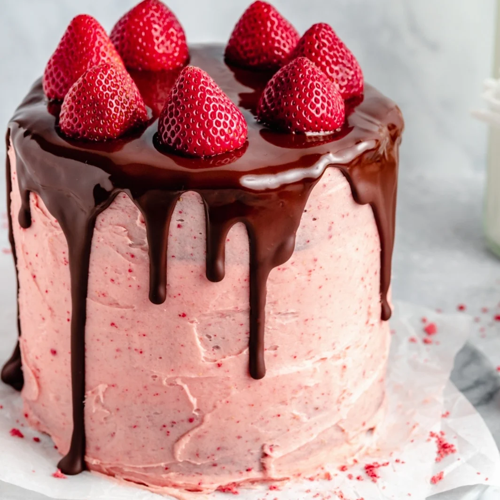

Strawberry cake

Description
Beautiful inside out chocolate covered strawberry cake topped
with a luscious, homemade strawberry buttercream frosting. This wonderful, grain
free and gluten free chocolate strawberry cake is easily dairy free and
makes the perfect dessert for Valentine’s Day or celebrations! Add a
drizzle of chocolate ganache on top for the ultimate
indulgence
A chocolate brownie meets a chocolate covered strawberry, they fall in
love and BOOM! This cake is born: a grain free chocolate brownie cake
that’s moist, fudgy and dense; covered with a beautiful strawberry
buttercream, drizzled with melted chocolate and finished off with fresh
strawberries.
Yes, this cake is just as delicious as it is beautiful… and guess
what?
This chocolate strawberry cake is gluten free, grain free and easily dairy
free. Perfect for Valentine’s day for your sweetie, or for any special
occasion. I know you’re going to love it.
Ingredients
- Eggs: you’ll need 4 eggs in this cake recipe to give it the right
texture. I haven’t tested this cake with flax eggs, but let me know if you
do!
- Sweetener (150g): this strawberry chocolate cake is naturally sweetened with
coconut sugar and some pure maple syrup. Use both to make sure the cake is
the perfect, fudgy consistency.
- Almond butter (300g): using a natural, creamy almond butter creates an even deeper flavor and great texture. See below for more options I recommend.
- Coconut oil (150ml): we’ll also need some melted and cooled coconut oil for extra moisture, or feel free to sub melted butter or melted vegan butter.
- Almond flour (250g): to keep the cake gluten & grain free you’ll need to use a fine, blanched almond flour. Sorry, there are no substitutions for the flour.
- Cacao powder (150g): for that rich, dark chocolate flavor we’re using unsweetened cacao powder. If you don’t have cacao, use a good quality unsweetened cocoa powder.
- Baking staples (1tsp): you’ll also need some vanilla extract, baking soda and salt.
- Toppings: this cake isn’t complete without that gorgeous homemade strawberry buttercream frosting. Feeling extra fancy? Drizzle the chocolate ganache made from chocolate chips and a bit of
coconut oil, and top with fresh strawberries!
Steps
- Preheat the oven to 350 degrees F. Line the bottom of three 6-inch round cake pans or two 9-inch round cake pans with parchment paper rounds. Spray parchment paper and sides of the
pans with nonstick cooking spray. YOU SHOULD USE PARCHMENT PAPER or the cake is likely to stick. Please do not forget.
- In a large bowl, whisk together the eggs, coconut sugar, maple syrup, almond butter and vanilla extract until smooth. Slowly whisk in the melted and cooled coconut oil until it’s well
incorporated. The mixture should be very smooth and well combined. Note: It is important that your eggs are at room temperature otherwise the coconut oil will coagulate. The coconut oil should
be melted but not HOT, but rather closer to room temperature.
- In a separate bowl, whisk the almond flour, cacao/cocoa powder, baking soda and salt. Add
the dry ingredients to the wet ingredients and mix well with a rubber spatula until
smooth.
- Divide batter evenly between pans and spread out with a spatula to smooth the tops. Allow
batter to sit in pans while your oven preheats. Bake for 17-28 minutes in the two 9-inch pans
or 20-25 minutes for three 6-inch pans. Cakes are done when a tester comes out clean or with
just a few crumbs attached. Allow the cake to cool for 15 minutes before removing from the pans
and placing on a wire rack to finish cooling. The cake should be completely cool before you
frost it. This is very important. Cakes can be made a day or two ahead if you’d like.
- Make your frosting: first add your freeze dried strawberries to a high powered blender (or
a food processor) and blend until they become a fine powder. Next, in the bowl of an electric
mixer, add the softened butter (or vegan butter) and whip on high until light and fluffy. Next,
add the freeze-dried strawberry powder, powdered sugar, vanilla extract and beat for 2-3
minutes more, starting on low speed and slowly increasing to high. Add in a few tablespoons of
milk to thin the frosting out, beat again until smooth.
- Now it’s time to frost the cake: place a few tablespoon tablespoons down onto the cake
stand and spread over a few inches. Invert one cake onto the cake stand, add about ½ heaping
cup frosting between each layer, repeat with each cake, then frost the top and sides of the
cake with the remaining frosting. If necessary, you can do a crumb coat here: frost the layers
as you normally would and then coat the outside of the cake with a very thin layer of frosting
then place in the fridge for 10-15 minutes before you finish frosting. This is so that the
crumbs stick to this layer of frosting and not your main layer. Once you are done frosting,
place your cake in the fridge. This is important! The frosting needs to be somewhat cool so the
chocolate drizzle will set properly on top.
- To make the chocolate ganache drizzle: add chocolate chips and coconut oil to a microwave
safe bowl. Microwave in 30 second intervals, stirring in between, until chocolate is smooth and
completely melted. Remove cake from the fridge and pour over the top of the cake. It should
naturally start to drip down the sides, but if it doesn’t, use a spoon to spread the chocolate
a little towards the sides to create a drip look on the sides. Place whole strawberries on top
of the cake and place in the fridge until chocolate hardens.
- Cake will stay good at room temp for a day or so, then should be placed in the fridge. Cake
will stay good for 5-7 days in the fridge, and should be covered to ensure freshness.
Enjoy!